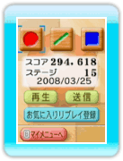
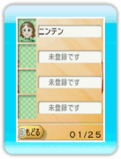
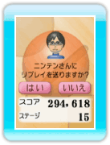
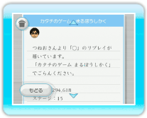
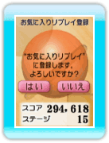

15 |
リプレイデータを送る／もらう |
 |
● リプレイデータを送る

マイメニューで「リプレイ」を選んでください。

リプレイデータを送りたいWiiフレンドを選んでください。

確認画面で「はい」を選ぶと、リプレイデータを送信することができます。 ※お互いにフレンド登録をしていないと、送信できません。 ※一度に送信できるリプレイデータの数には限りがあります。送信できなくなった場合は、次回のプレイ時に送信してください。

● リプレイデータをもらう

● もらったリプレイデータの保存 |
 |
 |
 |